标签索引TAGS · 配方标签
共 203 个标签：Create 配方用到的，加上常见的原版标签。点标签名查看详情。原版物品属于哪些标签，看 原版物品的标签 →
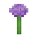
小型花minecraft:small_flowers2 条配方14 成员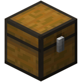
木箱子forge:chests/wooden1 条配方2 成员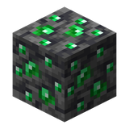
绿宝石矿石forge:ores/emerald未用于配方2 成员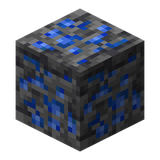
青金石矿石forge:ores/lapis未用于配方2 成员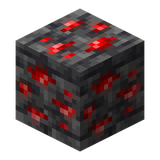
红石矿石forge:ores/redstone未用于配方2 成员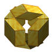
金块forge:storage_blocks/gold未用于配方1 成员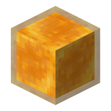
honey块forge:storage_blocks/honey未用于配方1 成员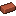
饰纹陶罐材料minecraft:decorated_pot_ingredients未用于配方21 成员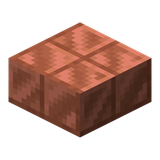
slabsminecraft:slabs未用于配方57 成员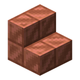
stairsminecraft:stairs未用于配方53 成员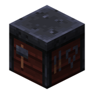
盔甲纹饰材料minecraft:trim_materials未用于配方10 成员